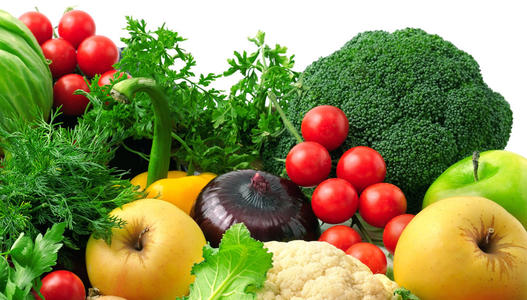
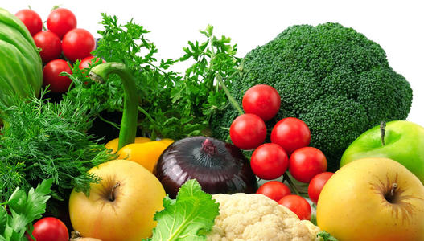

Green Food Network
中国绿色食品网是为当地人提供本地化的互联网信息服务，为外地人
提供了解绿色食品信息的移动互联网窗口，属于专业的绿色食品信息资讯
网站，面向全国用户。
产品服务
- 中国绿色食品网由聚尚科技提供技术支持，是专业的绿色食品信息资讯网站，为当地人提供本地化的互联网信息服务，为外地人提供了解绿色食品信息的移动互联网窗口。
- 让所有人通过中国绿色食品网获取和发布信息。
- 本地化的绿色食品服务资讯搜索平台是互联网
服务发展的深化，它解决了门户网站和搜索引擎无法
提供全面、完整、唯一的区域性绿色食品服务资讯的缺陷。
中国绿色食品网收集了大量本地绿色食品资讯，彻底的实现了搜索结果的区域化、行业化。
介绍
- 中国绿色食品网是一家全面服务于绿色产业行业的立体式、融合三网合一的包括了B2B,B2C两种模式的电子商务平台互联网电子商务平台，同时也是中国第一家绿色产业电子商务平台。采用中搜第三代智能搜索引擎技术，
在中搜网络技术有限公司北
京分公司负责技术开发和运
营的专业行业网站，是中国
电子商务协会企业电子商务
应用推进委员会、中国中小
企业协会联合认证的官方门
户网站，网站是以“环保百
姓生活、引领绿色时尚”为
宗旨，以“绿色经济、互利共赢”的理念为目标的专业电子商务平台。网站以百姓的衣食住行为核心包括了食品、家居、服装、建材等几个方面的内容。真正的为用户、为企业打造了一个领先的集互联网资讯、产品展示、供求、社区和会员一体化的绿色产业门户。


 
